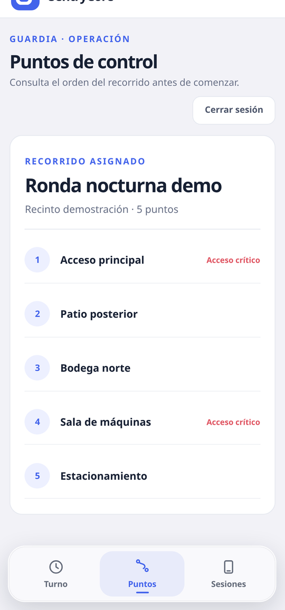
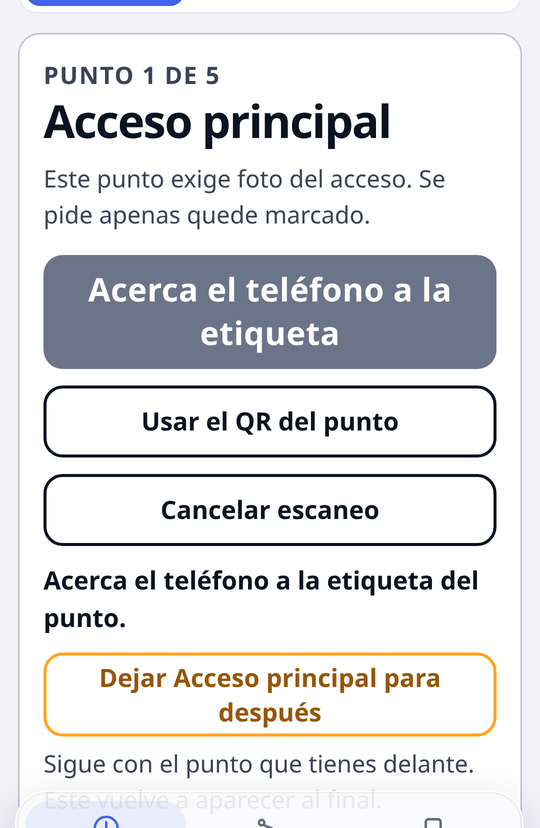
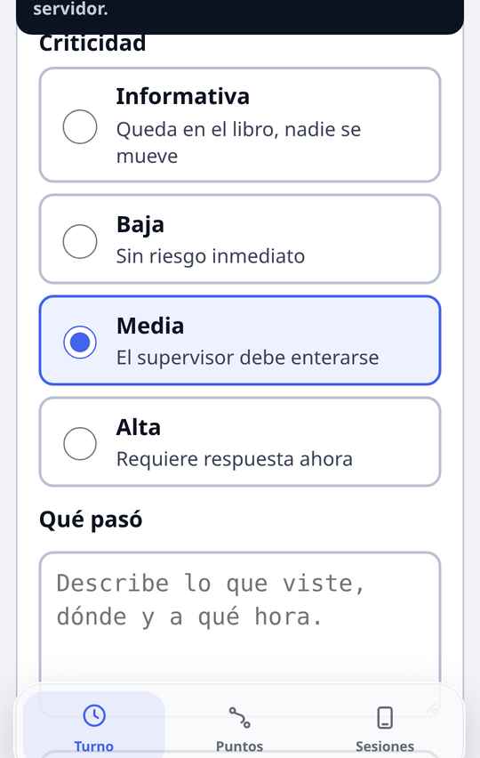

App para guardias de seguridad: qué ve el guardia en el turno
La aplicación del guardia hace una sola cosa y la hace sin vueltas: dejar constancia de la ronda mientras ocurre. Marca cada punto acercando el teléfono a una etiqueta NFC, reporta lo que encuentra con foto, y sigue funcionando entera cuando no hay señal.
Esta página recorre la app pantalla por pantalla, con capturas reales. Si buscas la explicación técnica del marcaje, está en control de rondas con NFC; si lo que te preocupa es la parte legal del GPS, en geolocalización y Ley 21.719.

Descarga gratuita, solo Android. El acceso lo habilita la empresa de seguridad: sin cuenta, la app no entra a ningún dato.
Entrar: tres formas, ninguna con papeles
El guardia entra con el código de 6 dígitos que le da su supervisor, con usuario y contraseña, o acercando una tarjeta NFC y escribiendo su PIN. El código de la empresa se escribe una sola vez y queda guardado en ese teléfono.
La contraseña la define el propio guardia desde un enlace de activación. Nadie más la conoce: ni el supervisor, ni el administrador de la empresa, ni el soporte del sistema.
El turno, en una pantalla

Abajo hay tres pestañas y nada más: Turno con la tarea de ahora, Puntos con el recorrido completo y Sesiones con los equipos donde el guardia tiene la cuenta abierta. Arriba, una línea de estado dice siempre dos cosas: si hay señal y si quedó algo por subir.
Marcar un punto

El guardia apoya la parte trasera del teléfono contra la etiqueta pegada en el muro. Como la etiqueta está en el lugar, marcarla exige haber llegado. Si la etiqueta no responde —se mojó, la taparon, el equipo no tiene antena— la app ofrece el código QR, que registra lo mismo.
Y si el punto no se puede alcanzar esa vuelta, el guardia lo deja para después y sigue con el siguiente. Vuelve a aparecer al final. Es la diferencia entre un sistema que acompaña el terreno y uno que obliga a devolverse o a inventar la marca.
Novedades: lo que no es un punto marcado

Un portón forzado, una luminaria quemada, alguien en el perímetro. El guardia elige la criticidad —informativa, baja, media o alta—, describe qué pasó y adjunta una foto. La alta dispara el aviso de inmediato; la informativa queda en el libro.
Aparte va el botón de pánico, que exige mantener el dedo apretado varios segundos para evitar disparos accidentales. Al activarse no suena ni vibra: si el guardia tiene a alguien al lado, una alarma audible lo pondría en más riesgo.
Sin señal, igual funciona
Subterráneos, bodegas, faenas sin cobertura. Todo lo que el guardia hace sin señal —marcar puntos, responder tareas, sacar fotos, reportar novedades, incluso el pánico— queda guardado en el teléfono con su hora y su ubicación reales, y se sube solo al recuperar conexión.
El supervisor ve la hora en que ocurrió, no la hora en que llegó al servidor. Y el guardia ve en su pantalla si le queda algo pendiente antes de cerrar sesión.
Lo que la app no hace
- No registra la ubicación fuera de la ronda. Ni durante el turno completo, ni después de cerrar. Es una decisión de producto, no un ajuste que alguien pueda cambiar sin que el trabajador se entere.
- No graba audio ni mira lo que el guardia hace en su teléfono.
- No guarda el recorrido para siempre: se elimina solo al cumplirse el plazo que fijó la empresa, 90 días por defecto.
- No funciona en iPhone. Hoy es solo Android, por el acceso a NFC que exige el marcaje.
Lo que hay que dejar listo en cada teléfono
- Permiso de ubicación en «Permitir todo el tiempo»: Android lo pregunta en dos pasos.
- Sin optimización de batería para la app. Es el paso que más se olvida y el que más daño hace: si el sistema la suspende, el recorrido sale cortado aunque la ronda se haya hecho entera.
- Cámara permitida y NFC encendido.
- Hora automática, para que las marcas no queden fuera de lugar en el informe.
Preguntas frecuentes
¿Dónde se descarga?
En Google Play, buscando SentryCore. Es gratis y es solo para Android. Entrar requiere una cuenta creada por la empresa de seguridad.
¿Sirve en un teléfono sin NFC?
Sí: el guardia marca leyendo el código QR pegado junto a la etiqueta.
¿Qué pasa si se queda sin señal?
Todo queda guardado en el teléfono y se sube solo al volver la conexión, con la hora real de cada marca.
¿Registra la ubicación todo el turno?
No. Solo mientras la ronda está en curso; si se pausa o se cierra, el registro se detiene.
¿Consume mucha batería?
El muestreo lo configura la empresa. Lo indispensable es excluir la app de la optimización de batería de Android en cada teléfono.
¿Lo vemos con tu operación?
Te mostramos la app y el panel con tus recintos y tus rondas, no con una demo genérica. Escríbenos y lo coordinamos.